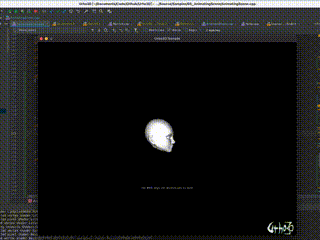
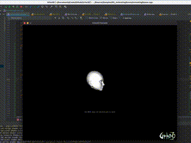

TonyHack
in Urho3D : 
i exported my model using urho3d blender addon , and i rotate the bone along x axis in urho3d, but it drag out my mesh
anyone knew the reason ? please help !

in Urho3D : 
i exported my model using urho3d blender addon , and i rotate the bone along x axis in urho3d, but it drag out my mesh
anyone knew the reason ? please help !

How are you rotating it?
If you rotate incorrectly you can get this behavior, and weirder.
maybe it’s because of the bug of the older version urho3d-blender plugins

I just export to wavefront or OBJ and import with assimp. The blender plugin is nice but breaks down quickly
official tool is more stable ; however, it does’t support morph in a pity;

During continuous editing you will experience scale drift, it will be worse when rotation is involved.
Urho stores canonical node transforms in their local spaces, if you have a transform operation that works on world space and sets values via world-space coordinates you will have even greater drift as your coordinates drift again during the transformation into local space.
i tested the official tool , it converted my FBX model perfectly ,
and i tested the third party tool
Urho3D-Blender
, the converted model was not good after i loaded in urho3d,
i compared two type models, the center was diffferent between them ,
so i guessed the Urho3d-blender has some bug while converting

Did you apply the rotation and scale to the object before exporting? I think at least one of those can sometimes cause problems with the animations.
the bone would rescale the model and it’s rotation ,
did u mean the engine doesn’t support the feature ?
No, the engine supports it. I thought there was an issue with at least one of the blender exporters and object transforms that I’d run into, where the animation didn’t export correctly if the model object or armature object had a transform applied to it that hadn’t been applied. Though I wasn’t able to replicate my remembered problems in any quick tests, so my memory may be wrong or it may have been an issue that was fixed.